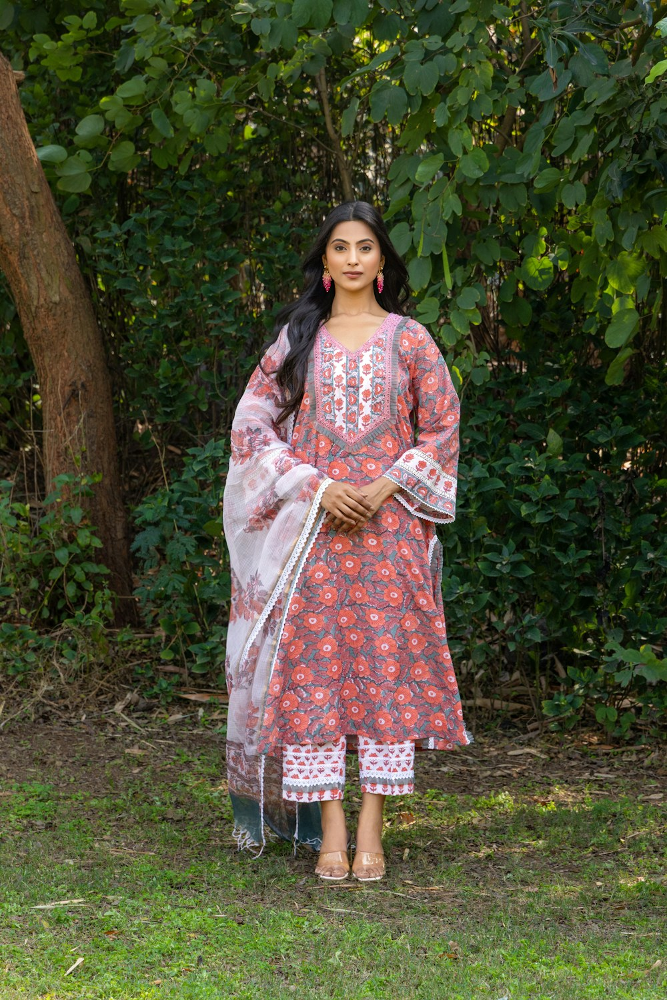

Authentic comfort
Lightweight, skin-friendly fabrics selected for beautiful everyday wear.

OUR STORY
FROM KOTA, WITH LOVE
Kota Kurtis began with a simple admiration for the light, distinctive weave that has made Rajasthan’s Kota Doria beloved for generations. We wanted to preserve its graceful character while creating pieces that fit beautifully into a modern wardrobe.
Every collection brings together breathable fabric, considered details and effortless silhouettes. The result is Indian wear you can reach for every day—at work, at home and at every little celebration in between.
Lightweight, skin-friendly fabrics selected for beautiful everyday wear.
Thoughtful finishing and strict quality checks in every single piece.
Timeless designs with just enough colour, print and personality.